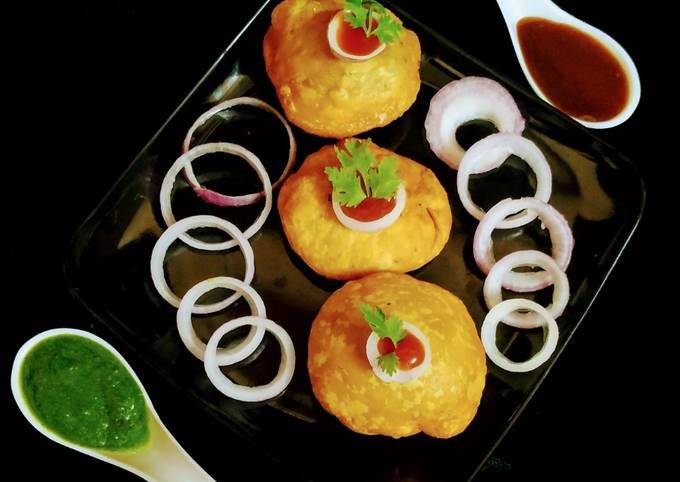
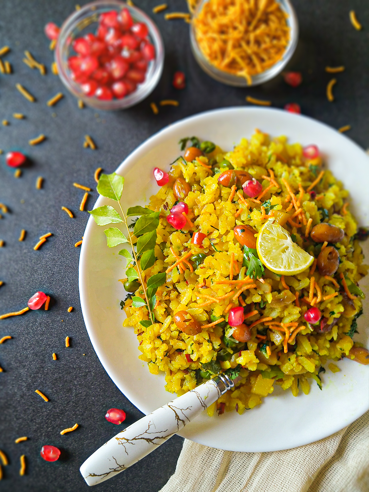
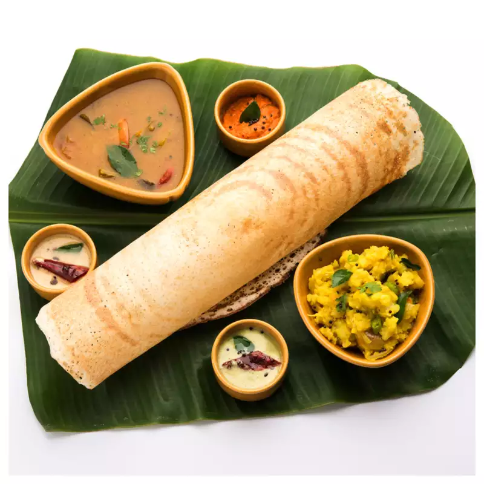

PUNJAB
-
Makke di Roti and Sarso da Saag

If we talk about Punjab then authentic Punjabi cuisines are the first thing that strikes our mind due to their delicious taste. Punjab is popular because of its tourist places, history, culture, and food. Punjabi people love many dishes but one of the most popular regional cuisines is Makke Di Roti and Sarso Da Saag. This cuisine is made with corn flour and mustard greens that are harvested during winter and served with hot ghee and some jaggery. You can enjoy the authentic taste of Punjab in many north Indian states because this is one of the most popular cuisines prepared during winter in north India. This exotic Punjabi dish tastes delicious and contains a huge amount of vitamins and nutrients.
-
Chole Bhature
Chole bhature are another delicious cuisine from Punjab. Chole bhature is a food dish popular in the northern areas of the Indian subcontinent. It is a combination of chana masala (spicy white chickpeas) and bhatura/puri, a deep-fried bread made from maida. Chole bhature is often eaten as a breakfast dish, sometimes accompanied with lassi. It can also be street food or a complete meal and may be accompanied with onions, pickled carrots, green chutney or achaar.

RAJASTHAN
-
Dal Bati Churma

Rajasthani people are famous for their colorful culture, historical hill forts, royal palaces, and tasty delicacies. From sweet and delicious Ghevar to Bajre ki Roti, Rajasthani foods are always on the top list if we talk about finger-licking delicacies. Dal Bati Churma is one of the most popular typical Rajasthani cuisine containing a three-in-one treat on one plate. Dal is one of the main dishes of Rajasthan and Churma is a very popular well-known Rajasthani sweet made up of using coarsely ground wheat flour, and besan (gram flour). Bati is hard bread made with semolina coarse wheat flour, ghee, jeera, and fennel seeds for adding flavor. Dal-Bati Churma tastes amazingly delicious due to the combination of sweet and savory tastes.
-
Kachori
Rajasthani people are famous for their colorful culture, historical hill forts, royal palaces, and tasty delicacies. Another delicious food from Rajasthan is Kachori. Moong Dal kachori is a lip-smacking dish, straight from the land of flavours Rajasthan and also called Rajasthan moong dal kachori or Khasta kachori. Rajasthani's relish moong dal kachori either for breakfast or quick evening snack, and also be made into chaat and served as side meal with any dish. A perfect kachori is one that is puffed up and flaky outside but hollow inside as the filling sticks to the crust. Moong dal kachori makes an absolutely delicious snack, which is very popular in north india and is also one of the most loved street food. With a flavorful moong dal mixture as filling, this kachori deep fried patiently on a slow flame to achieve that deliciously crisp crust and hollow, well cooked interior.

GUJRAT
-
Dhokla

Gujarati foods are very famous due to their unique flavors, tempting colors, and sweet tinge that comes after taking a bite of Gujarati food. Gujrat is popular for many dishes like Khandvi, Fafda Jalebi, Thepla, dal Dhokli, etc., but one of the most famous cuisines in Gujrat is “Dhokla”. This is a must-try cuisine due to its sweet and salty taste and soft and fluffy texture. This recipe is very lightweight and easily digestible for our stomachs that's the reason Gujrati people love to have dhokla in the morning for breakfast. Our honorable prime minister is also from Gujrat and he loves dhokla in his morning breakfast.
-
Jalebi Fafda
Gujarati foods are very famous due to their unique flavors, tempting colors, and sweet tinge that comes after taking a bite of Gujarati food. Another famous food from Gujrat is Jalebi Fafda. This street food is known for its sweet flavors that give it a scrumptious taste and tangy flavors. Filled with sweetness, Jalebi Fafda is a wonderful combination. You may already have tried Jalebi, but it is tastier when combined with the crunchy Fafda made of turmeric and gram flour.

MADHYA PRADESH
-
Poha
 Poha is one of the most famous and healthy dishes that come from Madhya Pradesh. This dish is super light and very healthy cuisine made with flattened rice, oil, and some mustard seeds. This super healthy delicacy is fondly eaten in all parts of our country for breakfast. There are very few ingredients are needed while making Poha and served with chutney.
-
Mawa Bati
One of the most famous sweet dish from Madhya Pradesh is Mawa Bati. Mawa bati is a hot dessert from Madhya Pradesh made with spheres stuffed in mawa that are deep-fried and doused in sugar syrup. The size of the bati, which is larger than a gulab jamun, and the stuffing, make the difference. Unlike gulab jamuns, mawa bati is loaded with the milk powder, nuts, dry fruits, and mawa, which are coagulated milk solids. If this has tempted you enough, it is time that you make this decadent dessert at home too.

SOUTH INDIA
-
Dosa
 South Indian cuisine is one of the most popular native cuisines of India. It is primarily a combination of the food of the five states of Andhra Pradesh, Karnataka, Telangana, Tamil Nadu and Kerala. One of the most famous cuisines in South India is “Dosa”. Dosas are not only the traditional breakfast of South India but also the most popular comfort food all across the country. They are prepared when a batter of fermented rice and lentils is smeared on a pan. Masala Dosas have a filling of aloo sabzi inside them. These days you can try different variants of dosas like rawa dosa, tomato dosa, cheese dosa and more.
-
Idli Sambhar
South Indian cuisine is one of the most popular native cuisines of India. Soft and fluffy white idlis are another breakfast option in South India. Idlis are also prepared with a batter of fermented rice and lentils. This batter is put in circular moulds and steamed on a stove. Idlis are served with hot and tangy sambar, coconut chutney and gun powder chutney. The fluffy delicacy is soft and easy on the digestion.